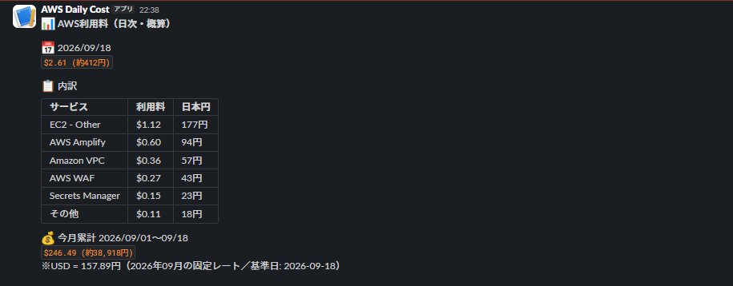
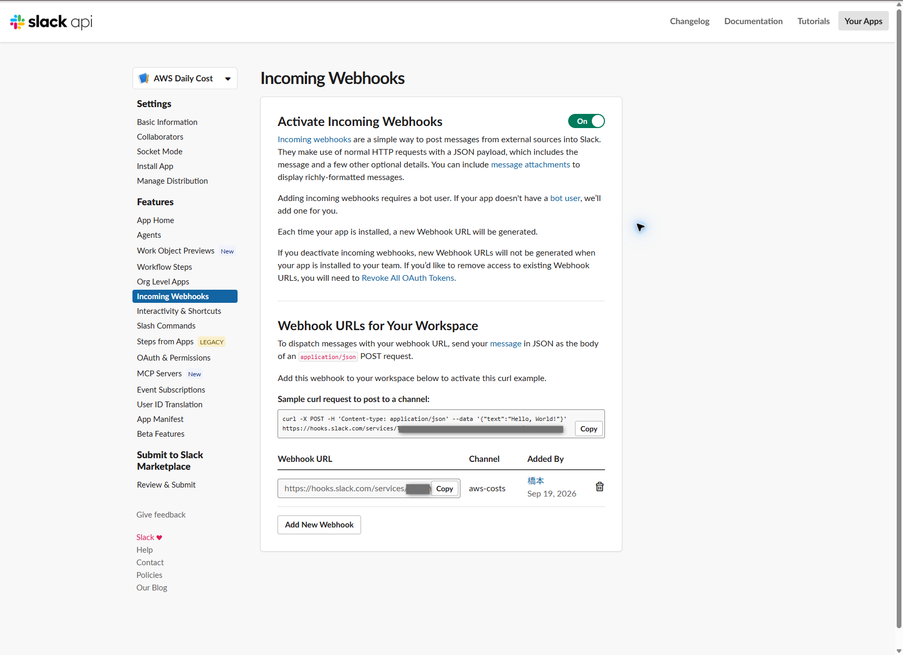

AWS利用料を毎朝3時にSlackへ通知してみた
Cost Explorerの前日利用料、サービス別内訳、当月累計を毎日03:00 JSTにSlackへ送る構成をまとめます。
Slack Incoming Webhook、IAM、Parameter Store、Lambda、EventBridge Schedulerの設定と検証手順を実際の構成に沿って示します。
今回実現した構成
EventBridge Schedulerが毎日03:00 JSTにLambdaを起動します。LambdaはCost ExplorerからUSD建ての概算利用料を取得し、月ごとに固定したECB参考レートで円換算して、Slackの表ブロックで投稿します。
| 項目 | 設定値 |
|---|---|
| AWSリージョン | Asia Pacific (Tokyo) ap-northeast-1 |
| CloudFormationスタック | aws-daily-cost-slack |
| Lambda実行ロール | aws-costs-role |
| Lambda | Python 3.13、128 MB、タイムアウト30秒 |
| スケジュール | cron(0 3 * * ? *)、Asia/Tokyo、Flexible time window無効 |
| Slack投稿先 | #aws-costs（Incoming Webhook） |
| Webhook保管先 | SSM Parameter Store /daily-cost-slack/webhook、SecureString |
| 月次レート保管先 | SSM Parameter Store /daily-cost-slack/fx/YYYY-MM、String |
| 料金データ | Cost Explorer UnblendedCost、日次、サービス別。APIクライアントはus-east-1 |

Cost Explorerの数値は概算で、反映遅延や後日の調整があります。円換算はECB参考レートによる表示で、税やAWSの確定請求額とは一致しません。
1. Slack Incoming Webhookを作成
- Slack APIのアプリ管理画面で
AWS Daily Costアプリを作成し、対象ワークスペースを選択します。 Incoming Webhooksを開いてActivate Incoming Webhooksを有効にします。Add New Webhookから投稿先の#aws-costsを選択して許可します。- 発行されたWebhook URLを安全な一時保管場所へ控え、次の手順でParameter Storeへ登録します。

Webhook URLそのものが投稿権限を持つ秘密情報です。URL、コピー用curlコマンド、Parameter Storeの値をスクリーンショットやGitへ載せないでください。
2. WebhookをParameter Storeへ保存
発行したWebhook URLをSystems ManagerのParameter Storeに保存します。
- Systems ManagerでParameter Storeを開き、パラメータの作成を選択します。
- 以下の設定値を入力し、前手順で取得したWebhook URLを値に設定します。
- 保存後、パラメータ名とタイプが指定どおりであることを確認します。値は記事やスクリーンショットに表示しません。
| 設定項目 | 設定値 |
|---|---|
| 名前 | /daily-cost-slack/webhook |
| タイプ | SecureString |
| 暗号化キー | AWS管理キー aws/ssm |
| 値 | Slackで発行したWebhook URL（非公開） |
月次レート用の/daily-cost-slack/fx/YYYY-MMは、Lambdaが報告対象月の初回実行時にStringとして作成します。手動で作成する必要はありません。
3. Lambda実行ロールを作成
Lambdaが料金とパラメータを取得するための実行ロールを作成します。
| 設定項目 | 設定値 |
|---|---|
| 信頼されたエンティティ | Lambda |
| ロール名 | aws-costs-role |
| AWS管理ポリシー | AWSLambdaBasicExecutionRole（CloudWatch Logsへの出力） |
| 追加する権限 | ce:GetCostAndUsage、ssm:GetParameter、ssm:PutParameter |
- IAMでロールを作成し、信頼されたエンティティに
Lambdaを選択します。 - ロール名を
aws-costs-roleとし、AWSLambdaBasicExecutionRoleをアタッチします。 - 以下のJSONをインラインポリシーとして追加します。
<AWS_ACCOUNT_ID>は自分のAWSアカウントIDに置き換えます。
{
"Version": "2012-10-17",
"Statement": [
{"Sid": "ReadCostExplorer", "Effect": "Allow", "Action": "ce:GetCostAndUsage", "Resource": "*"},
{"Sid": "ReadWebhookAndMonthlyRate", "Effect": "Allow", "Action": "ssm:GetParameter", "Resource": [
"arn:aws:ssm:ap-northeast-1:<AWS_ACCOUNT_ID>:parameter/daily-cost-slack/webhook",
"arn:aws:ssm:ap-northeast-1:<AWS_ACCOUNT_ID>:parameter/daily-cost-slack/fx/*"
]},
{"Sid": "StoreMonthlyRate", "Effect": "Allow", "Action": "ssm:PutParameter",
"Resource": "arn:aws:ssm:ap-northeast-1:<AWS_ACCOUNT_ID>:parameter/daily-cost-slack/fx/*"}
]
}今回の構成ではaws/ssm管理キーを使用し、カスタマー管理KMSキーの復号権限は別途付けていません。カスタマー管理キーに変更する場合は、そのキーのポリシーとkms:Decryptを再確認します。
4. SAMでLambdaとスケジュールを配置
SAM CLIを導入し、app.pyとtemplate.yamlを同じディレクトリに置きます。実際に配置した定義は次のとおりです。
AWSTemplateFormatVersion: '2010-09-09'
Transform: AWS::Serverless-2016-10-31
Description: Daily estimated AWS costs to a private Slack channel
Parameters:
WebhookParameterName:
Type: String
Default: /daily-cost-slack/webhook
Resources:
DailyCostFunction:
Type: AWS::Serverless::Function
Properties:
CodeUri: .
Handler: app.lambda_handler
Runtime: python3.13
Role: !Sub arn:${AWS::Partition}:iam::${AWS::AccountId}:role/aws-costs-role
Timeout: 30
MemorySize: 128
Environment:
Variables:
WEBHOOK_PARAMETER_NAME: !Ref WebhookParameterName
FX_PARAMETER_PREFIX: /daily-cost-slack/fx
Events:
EveryMorning:
Type: ScheduleV2
Properties:
ScheduleExpression: cron(0 3 * * ? *)
ScheduleExpressionTimezone: Asia/Tokyo
FlexibleTimeWindow:
Mode: 'OFF'ローカルの作業ディレクトリでビルドし、AWSアカウントとリージョンを確認してから配置します。
aws sts get-caller-identitysam buildsam deploy --guidedsam deploy --guidedではスタック名aws-daily-cost-slack、リージョンap-northeast-1を指定し、変更セットとIAM関連の確認を行います。配置後、EventBridge SchedulerのスケジュールがENABLEDで、時刻がcron(0 3 * * ? *)／Asia/Tokyoか確認します。
5. Lambdaで料金を集計し、表形式で送信
Lambdaでは次の順に料金を集計し、Slackへ送信します。
- Cost Explorerから報告対象月の初日以降の日次料金をサービス別に取得します。
- 前日の料金と月初から前日までの累計を計算し、前日の上位5サービスと残りの「その他」をまとめます。
- 対象月の固定レートで円換算し、Slackの表ブロックとフォールバック用テキストを作成します。
- Parameter StoreからWebhook URLを復号して取得し、Slackに投稿します。
| 項目 | 設定・表示内容 |
|---|---|
| 料金指標 | Cost Explorer UnblendedCost（日次・サービス別） |
| 日次内訳 | 上位5サービスと残額の「その他」 |
| 月次累計 | 報告対象月の初日から前日まで |
| 表示名 | Amazon Virtual Private Cloud → Amazon VPC、AWS Secrets Manager → Secrets Manager |
| 参考換算レート | ECB公表のUSD・JPYの値から算出し、対象月の初回投稿時にSSMへ保存。同じ月は保存済みレートを再利用 |
| レート取得失敗時 | USDのみを表示 |
配置したapp.pyの全コードを以下に掲載します。template.yamlは前節に掲載しました。リポジトリのapp.pyとtemplate.yamlからも確認できます。
Lambdaの全コード（app.py）
"""Post the previous day's estimated AWS costs to Slack."""
import json
import os
from datetime import datetime, timedelta, timezone
from decimal import Decimal, ROUND_HALF_UP
from unicodedata import east_asian_width
from urllib.request import Request, urlopen
from xml.etree import ElementTree
JST = timezone(timedelta(hours=9))
ECB_URL = "https://www.ecb.europa.eu/stats/eurofxref/eurofxref-daily.xml"
SERVICE_NAMES = {
"Amazon Virtual Private Cloud": "Amazon VPC",
"AWS Secrets Manager": "Secrets Manager",
}
def yen(amount, rate):
return int((amount * rate).quantize(Decimal("1"), rounding=ROUND_HALF_UP))
def format_amount(amount, rate):
value = f"${amount:.2f}"
return f"{value} (約{yen(amount, rate):,}円)" if rate else value
def display_width(value):
return sum(2 if east_asian_width(char) in ("F", "W") else 1 for char in value)
def format_breakdown(items, rate):
rows = [(SERVICE_NAMES.get(name, name), f"${amount:.2f}",
f"{yen(amount, rate):,}円" if rate else "-") for name, amount in items]
name_width = max([display_width("サービス"), *(display_width(row[0]) for row in rows)])
usd_width = max([display_width("利用料"), *(display_width(row[1]) for row in rows)])
def row(name, usd, jpy):
return (name + " " * (name_width - display_width(name) + 2)
+ usd + " " * (usd_width - display_width(usd) + 2) + jpy)
return "\n".join(["```", row("サービス", "利用料", "日本円"),
*(row(*values) for values in rows), "```"])
def get_monthly_rate(ssm, month):
name = f"{os.environ['FX_PARAMETER_PREFIX'].rstrip('/')}/{month}"
try:
saved = json.loads(ssm.get_parameter(Name=name)["Parameter"]["Value"])
return Decimal(saved["rate"]), saved["date"]
except Exception as error:
if getattr(error, "response", {}).get("Error", {}).get("Code") != "ParameterNotFound":
raise
with urlopen(ECB_URL, timeout=8) as response:
root = ElementTree.parse(response).getroot()
quotes = {}
quote_date = None
for element in root.iter():
if "time" in element.attrib:
quote_date = element.attrib["time"]
if element.attrib.get("currency") in ("USD", "JPY"):
quotes[element.attrib["currency"]] = Decimal(element.attrib["rate"])
if not quote_date or len(quotes) != 2:
raise ValueError("ECB reference rates are incomplete")
rate = quotes["JPY"] / quotes["USD"]
ssm.put_parameter(
Name=name,
Value=json.dumps({"rate": str(rate), "date": quote_date}),
Type="String",
Overwrite=False,
)
return rate, quote_date
def get_costs(ce, first_day, today):
request = {
"TimePeriod": {"Start": first_day.isoformat(), "End": today.isoformat()},
"Granularity": "DAILY",
"Metrics": ["UnblendedCost"],
"GroupBy": [{"Type": "DIMENSION", "Key": "SERVICE"}],
}
days = {}
while True:
response = ce.get_cost_and_usage(**request)
for day in response["ResultsByTime"]:
date = day["TimePeriod"]["Start"]
record = days.setdefault(date, {"services": {}, "estimated": False})
record["estimated"] |= day.get("Estimated", False)
for group in day["Groups"]:
name = group["Keys"][0]
amount = Decimal(group["Metrics"]["UnblendedCost"]["Amount"])
record["services"][name] = record["services"].get(name, Decimal(0)) + amount
token = response.get("NextPageToken")
if not token:
return days
request["NextPageToken"] = token
def summarize(today, days):
yesterday = today - timedelta(days=1)
month_start = yesterday.replace(day=1)
previous = days.get(yesterday.isoformat(), {"services": {}, "estimated": True})
services = previous["services"]
daily = sum(services.values(), Decimal(0))
monthly = sum(
(sum(day["services"].values(), Decimal(0)) for key, day in days.items()
if month_start.isoformat() <= key <= yesterday.isoformat()),
Decimal(0),
)
ranked = sorted(services.items(), key=lambda item: item[1], reverse=True)
shown = [(name, amount) for name, amount in ranked if amount > 0][:5]
remainder = daily - sum((amount for _, amount in shown), Decimal(0))
if remainder > 0:
shown.append(("その他", remainder))
return yesterday, month_start, daily, monthly, shown
def rate_line(yesterday, rate, rate_date):
if rate:
return f"※USD = {rate:.2f}円（{yesterday:%Y年%m月}の固定レート／基準日: {rate_date}）"
return "為替レートを取得できなかったため円換算なし"
def format_message(today, days, rate=None, rate_date=None):
yesterday, month_start, daily, monthly, shown = summarize(today, days)
lines = [
"📊 *AWS利用料（日次・概算）*", "",
f"📅 {yesterday:%Y/%m/%d}", f"`{format_amount(daily, rate)}`",
"", "📋 内訳",
]
lines.append(format_breakdown(shown, rate) if shown else "料金データなし（反映待ちの可能性があります）")
lines.extend([
"", "", f"💰 今月累計 {month_start:%Y/%m/%d}〜{yesterday:%m/%d}",
f"`{format_amount(monthly, rate)}`", rate_line(yesterday, rate, rate_date),
])
return "\n".join(lines)
def format_payload(today, days, rate=None, rate_date=None):
yesterday, month_start, daily, monthly, shown = summarize(today, days)
intro = ("📊 *AWS利用料（日次・概算）*\n\n"
f"📅 {yesterday:%Y/%m/%d}\n`{format_amount(daily, rate)}`\n\n📋 内訳")
footer = (f"💰 今月累計 {month_start:%Y/%m/%d}〜{yesterday:%m/%d}\n"
f"`{format_amount(monthly, rate)}`\n{rate_line(yesterday, rate, rate_date)}")
blocks = [{"type": "section", "text": {"type": "mrkdwn", "text": intro}}]
if shown:
rows = [["サービス", "利用料", "日本円"]]
rows.extend([SERVICE_NAMES.get(name, name), f"${amount:.2f}",
f"{yen(amount, rate):,}円" if rate else "-"] for name, amount in shown)
blocks.append({
"type": "table",
"column_settings": [{"align": "left"}] * 3,
"rows": [[{"type": "raw_text", "text": cell} for cell in row] for row in rows],
})
else:
blocks.append({"type": "section", "text": {"type": "mrkdwn",
"text": "料金データなし（反映待ちの可能性があります）"}})
blocks.append({"type": "section", "text": {"type": "mrkdwn", "text": "\n\n" + footer}})
return {"text": format_message(today, days, rate, rate_date), "blocks": blocks}
def lambda_handler(_event, _context):
import boto3
from botocore.exceptions import ClientError
today = datetime.now(JST).date()
yesterday = today - timedelta(days=1)
days = get_costs(boto3.client("ce", region_name="us-east-1"), yesterday.replace(day=1), today)
ssm = boto3.client("ssm")
try:
rate, rate_date = get_monthly_rate(ssm, yesterday.strftime("%Y-%m"))
except (OSError, ValueError, ClientError) as error:
print(f"Reference rate unavailable: {type(error).__name__}")
rate, rate_date = None, None
payload = format_payload(today, days, rate, rate_date)
webhook = ssm.get_parameter(Name=os.environ["WEBHOOK_PARAMETER_NAME"], WithDecryption=True)["Parameter"]["Value"]
request = Request(webhook, data=json.dumps(payload).encode("utf-8"),
headers={"Content-Type": "application/json"}, method="POST")
with urlopen(request, timeout=10) as response:
if response.status != 200:
raise RuntimeError(f"Slack returned HTTP {response.status}")
return {"status": "sent", "date": yesterday.isoformat()}
Slackの列ずれをなくすために使用した表ブロックの部分を抜粋します。
rows = [["サービス", "利用料", "日本円"]]
rows.extend([SERVICE_NAMES.get(name, name), f"${amount:.2f}",
f"{yen(amount, rate):,}円" if rate else "-"] for name, amount in shown)
blocks.append({
"type": "table",
"column_settings": [{"align": "left"}] * 3,
"rows": [[{"type": "raw_text", "text": cell} for cell in row] for row in rows],
})半角スペースの個数で表を揃える方式は、日本語と英数字が混在するとSlackの表示環境によってずれます。Slackのtable Block Kitブロックなら、見出しと金額をそれぞれの列に配置できます。textには表非対応環境向けのフォールバックも含めます。
6. テスト送信と運用確認
- Lambdaのテストイベントに
{}を設定して実行します。 - 実行結果が
status: sentで、#aws-costsに1件届いたことを確認します。 - サービス、利用料、日本円の列がSlackで縦に揃い、前日の日付と月次累計が表示されることを確認します。
- CloudWatch Logsでエラーがないことと、Schedulerが
ENABLEDであることを確認します。
Lambdaの手動テストもCost Explorer APIを呼び、実際にSlackへ投稿します。テストのたびに通知が増え、APIリクエストにも料金が発生し得るため、連続実行には注意してください。
出典：AWS SAM ScheduleV2、Slack Incoming Webhooks、Slack Table Block